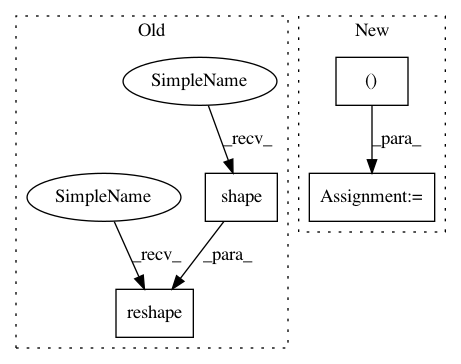

5f078112011a66a93432cb6d38c03935a10f382e,tensorly/decomposition/candecomp_parafac.py,,non_negative_parafac,#,427
Before Change
if normalize_factors:
weights = tl.norm(factor, order=2, axis=0)
weights = tl.where(tl.abs(weights) <= tl.eps(tensor.dtype),
tl.ones(tl.shape(weights), **tl.context(factors[0])),
weights)
factor = factor/(tl.reshape(weights, (1, -1)))
factors[mode] = factor
if tol:
After Change
factors[mode] = factor
if normalize_factors:
weights, factors = kruskal_normalise((weights, factors))
if tol:
// ||tensor - rec||^2 = ||tensor||^2 + ||rec||^2 - 2*<tensor, rec>
factors_norm = kruskal_norm((weights, factors))
In pattern: SUPERPATTERN
Frequency: 3
Non-data size: 4
Instances
Project Name: tensorly/tensorly
Commit Name: 5f078112011a66a93432cb6d38c03935a10f382e
Time: 2020-07-10
Author: git@ameyer.me
File Name: tensorly/decomposition/candecomp_parafac.py
Class Name:
Method Name: non_negative_parafac
Project Name: taehoonlee/tensornets
Commit Name: b9927f30cb9c92040c30d0fe8c735d8baea167b2
Time: 2019-03-13
Author: me@taehoonlee.com
File Name: tensornets/layers.py
Class Name:
Method Name: gconvbn
Project Name: suavecode/SUAVE
Commit Name: f3d66c98e15a8d48ba1b546b53d74af6f1535ecf
Time: 2020-07-18
Author: ebotero@stanford.edu
File Name: trunk/SUAVE/Methods/Missions/Segments/Ground/Common.py
Class Name:
Method Name: solve_residuals